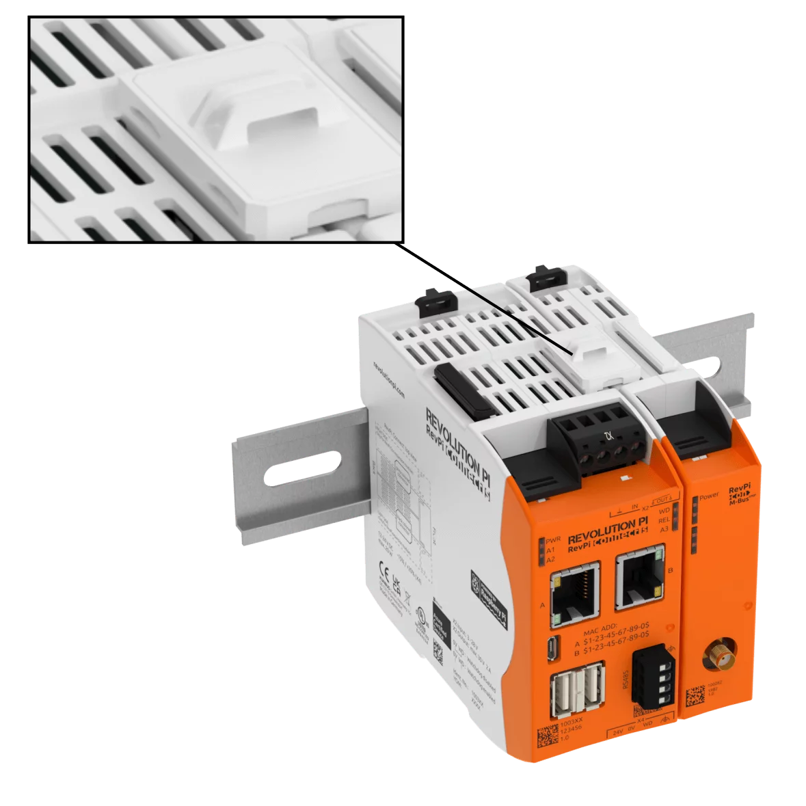

RevPi Con M-Bus
The communication modules RevPi Con M-Bus and RevPi Con CAN are extension modules for RevPi Connect.
When assembling these modules you have to consider following:
You can connect one RevPi Con M-Bus or one RevPi Con CAN module to the RevPi Connect. If you connect two identical modules, none of them will work. You can connect a RevPi Con CAN and a RevPi Con M-Bus module to the RevPi Connect. The communication module is powered via RevPi Connect.
| Use the ConBridge to connect the communication modules on the right side to the RevPi Connect. The communication modules can be damaged if you accidentally connect them to the PiBridge on the left side. You can distinguish the jumpers on the color. The ConBridge is grey and the PiBridge is black. |
| The modules may only be connected and removed as long as the power supply of the RevPi is switched off, otherwise your devices may be damaged. |

Plug the ConBridge into the ConBridge connectors of the RevPi Connect and the RevPi Con M-Bus as shown.